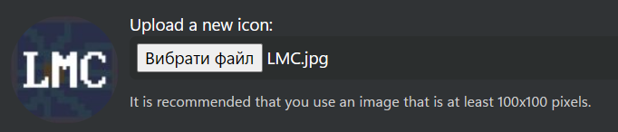

News and changes on the forum
Home News
New default theme April 20th
A new theme has been added by default.
Wikis April 12th
Wikis have been added to the forum. Anyone can create and edit topics (unless they are protected). It works the same way as Wikipedia.
Resource icon fix
Now, when uploading a resource icon, the loaded icon will be shown immediately. This didn't happen before.
Was: https://nostalgiaforum.rf.gd/resources/categories/blocklauncher-js-scripts.27/
Now: https://nostalgiaforum.rf.gd/mods/scripts/